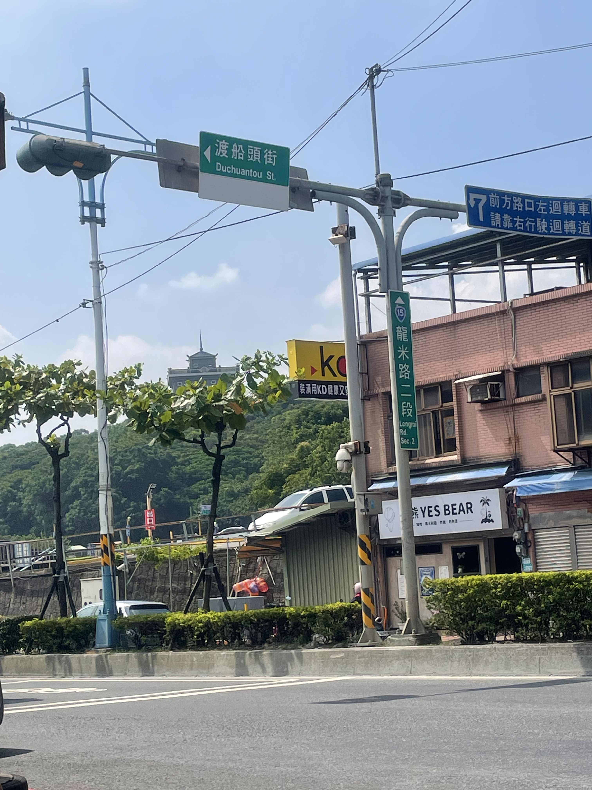
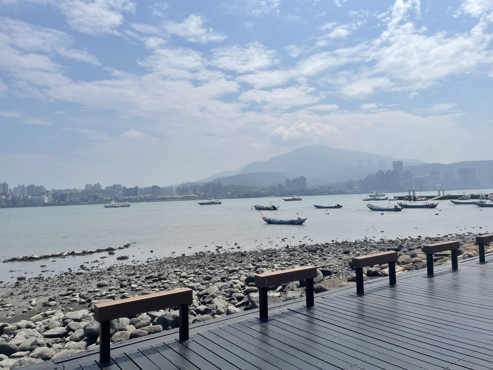
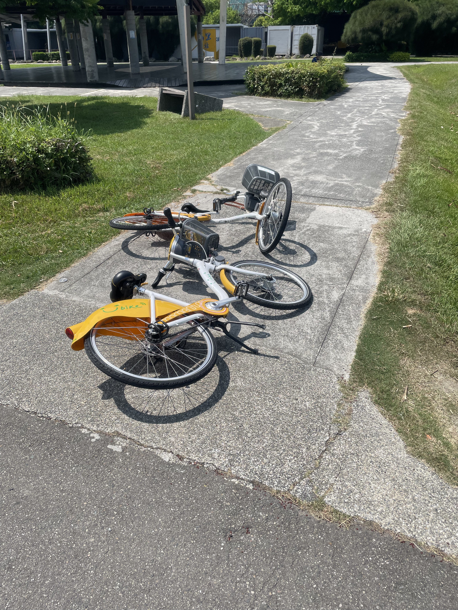
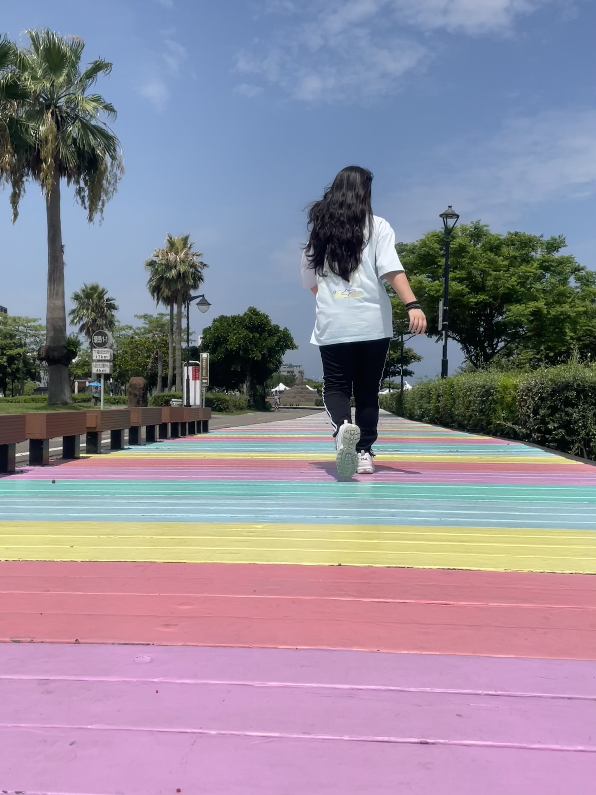

新北市八里區
基本資訊
位於新北市西北角，地處淡水河出海口南岸，地理位置兼具河岸與濱海特色。區內擁有廣闊的河岸景觀、沙洲與自然生態區，使八里成為北台灣重要的休閒與生態旅遊地區。 八里早期以漁業、農業與港口貿易為主要經濟活動，隨著都市發展與交通改善，逐漸轉型為結合觀光、休閒與生活功能的區域。區內保有自行車道、濱河公園與沙灘區，提供居民與遊客親近水域與享受戶外活動的空間，也能觀察河口生態與濕地景觀。
推薦景點
| 八里左岸碼頭
沿淡水河左岸延伸，是結合休閒、運動與自然景觀的河濱區域。這裡擁有寬闊的河岸步道與自行車道，適合慢跑、騎行與散步，並提供觀賞淡水河出海口風光的絕佳視角。 沿岸景觀綠意盎然，設有涼亭、草坪與親水平台，讓遊客能近距離感受河流與濕地生態。每到傍晚，河面映照夕陽與水鳥飛翔的景象，成為攝影與休憩的熱門地點。此外，八里左岸周邊也有文創市集與特色餐飲，使河岸活動不僅限於運動與自然體驗，還兼具文化休閒功能。




